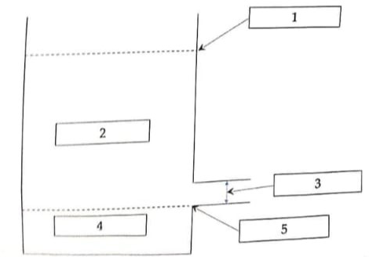

Quelle est la conséquence pratique des différences de pression de vapeur saturantes entre les agents anesthésiques halogénés ?
Question 2
Quelle relation existe-t-il entre la solubilité des halogénés dans le sang et la concentration cérébrale/alvéolaire ?
Question 3
Quelle relation existe-t-il entre la liposolubilité et la puissance des halogénés ?
Question 4
Définissez la concentration alvéolaire minimale d'un agent halogéné ?
Question 5
Citez 4 éléments démographiques environnementaux ou pharmacologiques qui diminuent la MAC d'un agent halogéné ?
Question 6
Citez une interaction des agents anesthésiques halogénés avec les curares non dépolarisants et deux conséquences pratiques en cas d'anesthésie de longue durée sous halogénés.
Question 7
Citez un effet commun aux agents anesthésiques halogénés et aux morphinomimétiques sur le contrôle central de la ventilation.
Question 8
Citez trois mécanismes de l'hyperalgésie induite par les morphiniques (HAIO).
Question 9
Pour les morphinomimétiques, citez deux propriétés qui définissent la fraction diffusible et les paramètres physicochimiques qui les sous-tendent.
Question 10
Définissez la demi-vie contextuelle d'un agent intraveineux.
Question 11
Expliquez pourquoi la demi-vie contextuelle du rémifentanyl est fixe ?
Sujet de Physiologie
Question 1
En situation physiologique, dans quel compartiment la plus grande partie du volume sanguin se situe-t-elle ?
Question 2
Écrivez la loi de Poiseuille adaptée au retour veineux faisant intervenir les éléments suivants : Retour veineux, pression systémique moyenne, pression atriale droite, résistance au retour veineux.
Question 3
Donnez une définition physiologique de la précharge ventriculaire.
Question 4
Expliquez comment la volémie peut influencer la résistance au retour veineux ?
Question 5

Faites correspondre aux compartiments ci-dessous (compartiment veineux) les termes appropriés :
- Volume non contraint (VNC)
- Pression systémique moyenne (PSM)
- Volume contraint (VC)
- Pression atriale droite (POD)
- Inverse des Résistances au retour Veineux (1/RRV)
Question 6
Définissez l'espace mort anatomique et l'espace mort alvéolaire. Que représentent-ils à eux deux ?
Question 7
Comment distinguer hypoventilation alvéolaire et shunt chez un patient hypoxémique en ventilation spontanée et en air ambiant ?
Question 8
Par quelle manœuvre simple peut-on différencier un shunt vrai de l'effet shunt chez un patient ventilé ?
Question 9
Décrivez la vasoconstriction pulmonaire hypoxique et brièvement deux mécanismes qu'elle fait intervenir ?
Question 10
Citez trois situations ou médicaments qui inhibent la vasoconstriction pulmonaire hypoxique.
🚀 Rejoignez notre formation complète
Cette annale fait partie de notre programme de formation. Découvrez notre préparation intensive avec corrections détaillées pour maximiser vos chances de réussite aux EVC.